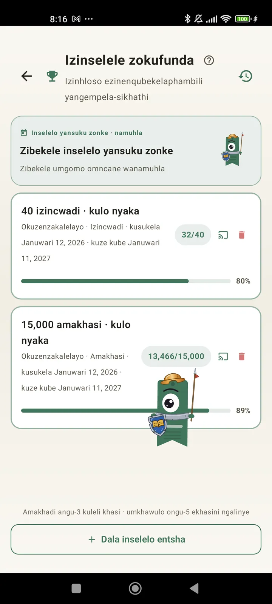

Zazi njengomfundi
Izinselelo, ama-bingo, ama-widget nezinye izici zokuthola okukhulu ekufundeni kwakho. Okusha ku-3.7: izinselelo nama-widget e-bingo.

Izinselelo zokufunda
Misa izinhloso ngamakhasi, uchungechunge noma izinhlobo. Kufika ezinselelweni eziyi-15 ezisebenzayo mahhala, ngaphandle komkhawulo nge-Pro. Kanye nenselelo yansuku zonke ongayenza ngendlela oyifunayo engabalwa emkhawulweni.

Inselelo yansuku zonke
Inhloso entsha nsuku zonke. Qedela inselelo ngaphambi kwamabili ukuze uchungechunge lwakho luqhubeke.

I-Bingo yokufunda
Ama-bingo amabili amasha njalo ngenyanga anezikwele ezinesihloko. Qedela imigqa, amakholomu noma ikhadi lonke.

Isifinyezo seviki
NgoMsombuluko wonke, isithombe seviki lakho: amakhasi afundiwe, isikhathi esiphelele, uchungechunge nokuthi liqhathaniswa kanjani nelangaphambilini.

Isifinyezo senyanga
Uma inyanga iphela, i-Lecturameter iyayifinyeza: amakhasi, isikhathi, izincwadi eziqediwe, isivinini sakho usuku ngosuku nencwadi yakho yenyanga.

I-widget ye-bingo Pro
Ikhadi le-bingo lale nyanga, njalo ebonakalayo, lenezikwele osuzigcwalisile nemigqa osuyenzile.

I-widget yencwadi Mahhala
Bona incwadi oyifundayo ngqo esikrinini sakho sasekhaya: ikhava, isihloko, umbhali, amakhasi nephesenti lenqubekelaphambili, njalo isesikhathini samanje. Ingashintshwa usayizi ukuze ilingane noma ukuphi ofuna.
Ngempela bhuti, uhlelo lokusebenza lunjengokwelashwa, ngisuka ekufundeni amakhasi ambalwa ngosuku ngaya cishe kumakhasi angama-20 ngosuku futhi ngiyaqhubeka nokuthuthukaImpendulo yomsebenzisi, ithunyelwe nge-imeyili

Ukuqhathanisa kwenyanga Pro
Ukubuka ngokushesha izinyanga zakho zakamuva ngaphandle kokuvula uhlelo lokusebenza. Imivimbo yamakhasi enyanga ngayinye, kugqamiswe yamanje, ukuze ubone ngokubuka kuphela ukuthi uyenza kangcono noma kubi kule nyanga kunangenyanga edlule.

I-widget yezinselelo Pro
Izinselelo zakho ezisebenzayo nenqubekelaphambili yazo esikrinini sasekhaya. Khetha ukuthi iziphi ezizoboniswa kusikrini Sezinselelo.